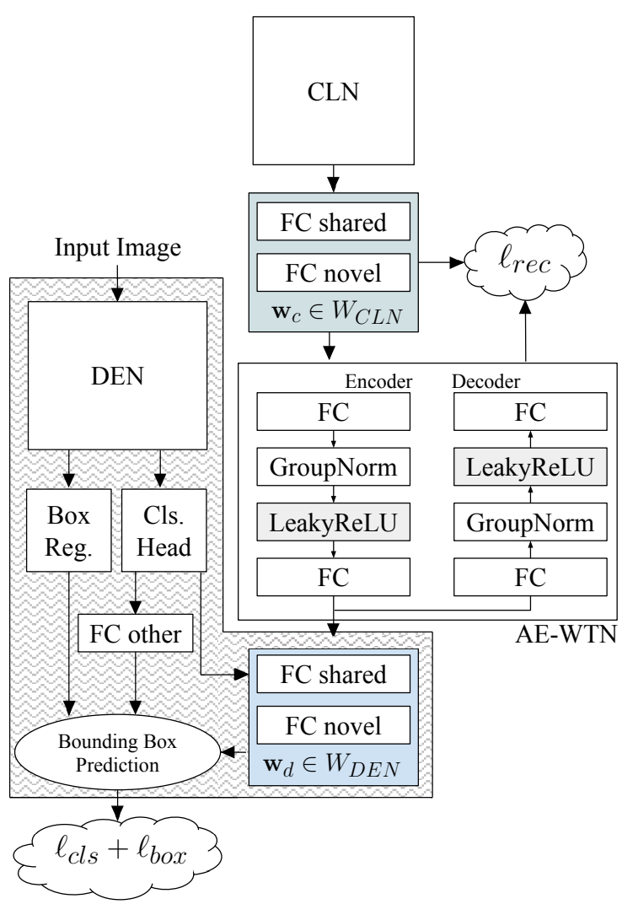
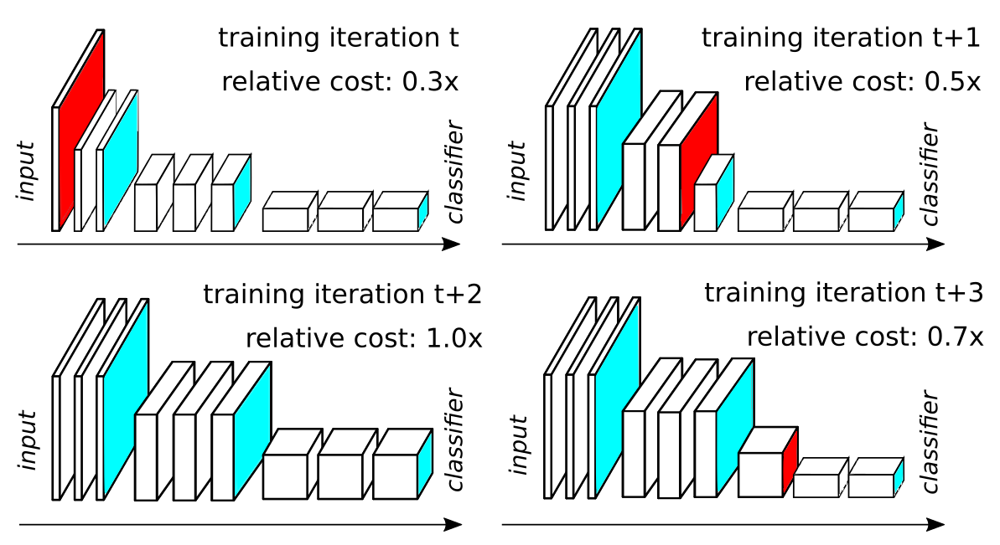
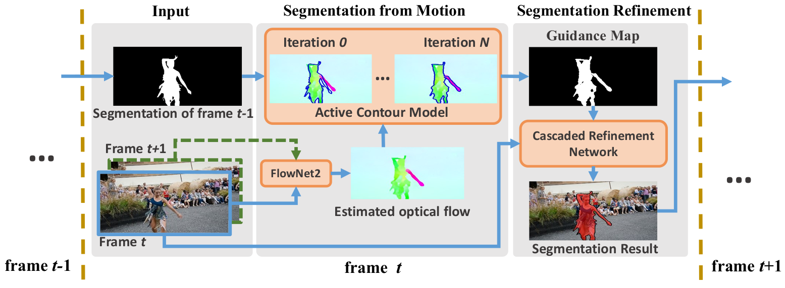
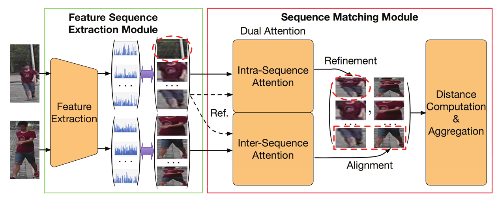
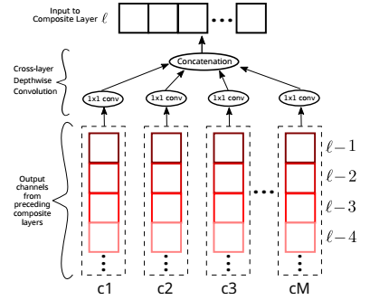
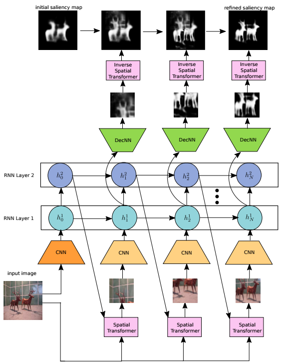
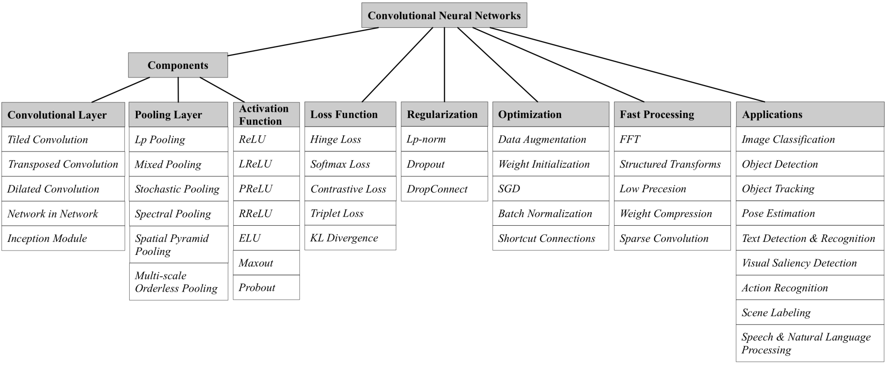
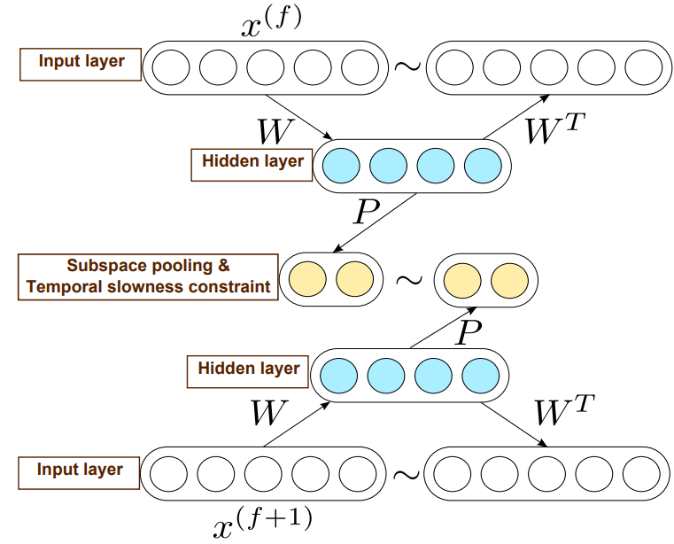

Jason Kuen
I am a PhD student advised by Prof. Yap-Peng Tan at Nanyang Technological University (NTU), Singapore. I also collaborate with Dr. Gang Wang (Alibaba AI Labs) on my research. Prior to this, I was an undergraduate at Multimedia University, with Kian Ming Lim being my thesis supervisor.
My research interests are deep learning (including its domain-agnostic aspects) and its applications in computer vision.
Education
PhD in E&E
BIT in Artificial Intelligence
Experience
Research Intern
Research Intern
Project Officer
Summer Intern
Research




Dual Attention Matching Network for Context-Aware Feature Sequence based Person Re-Identification
CVPR 2018
Jianlou Si, Honggang Zhang, Chun-Guang Li, Jason Kuen, Xiangfei Kong, Alex Kot, Gang Wang


Recurrent Attentional Networks for Saliency Detection
CVPR 2016
Jason Kuen, Zhenhua Wang, Gang Wang

Recent Advances in Convolutional Neural Networks
Pattern Recognition (PR) 2017
Jiuxiang Gu, Zhenhua Wang, Jason Kuen, Lianyang Ma, Amir Shahroudy, Bing Shuai, Ting Liu, Xingxing Wang, Gang Wang

Self-taught learning of a deep invariant representation for visual tracking via temporal slowness principle
Pattern Recognition (PR) 2015
Jason Kuen, Kian Ming Lim, Chin Poo Lee